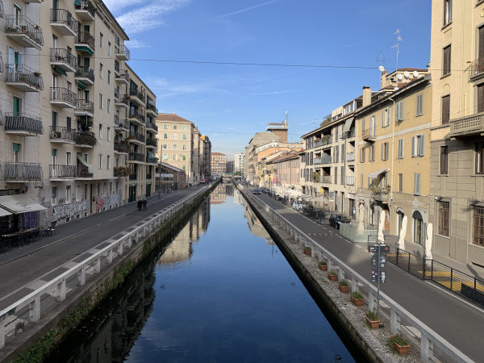
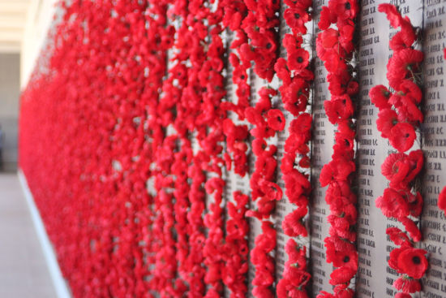

Meine Bilder
Auf Reisen habe ich schon viele Orte gesehen und auch fotografiert.
Hier habe ich Ihnen eine kleine Auswahl zusammengestellt.

Der Uluru im Red Centre, Australien
Der Sonnenuntergang am Uluru bildet eine wunderschöne Kulisse und setzt die orangene Farbe der Gegend in Szene.
Die Kanäle Mailands
Im Australian War Memorial in Canberra stehen alle Namen der Australischen Soldaten die in jeglichen Kriegen gestorben sind.
Meine Videos
Wann immer ich unterwegs bin filme ich besondere Momente. Aus genau so einem Moment ist dieses Video entstanden:
Angefangene 'Buchprojekte'
In my mind:
Ich habe mehrere Kapitel einer Geschichte verfasst, die mir nicht mehr aus dem Kopf ging.
Im ersten Kapitel wird die Protagonistin vor
Herausforderungen gestellt, die weitreichende Folgen nach sich ziehen werden.
Lesen Sie hier das erste Kapitel von In my mind:
In my mindSchon früh war das Schreiben eine Art Ventil für meine Gefühle und die Situationen in denen ich mich befand. Die Gefühle, und meine Situationen, für welche ich mich damals schämte habe ich keinem außer dem leeren Notizbuch anvertraut. Zum Schluss habe ich mich auch für die daraus entstandenen Geschichten geschämt. Und das Schreiben für eine lange Zeit aufgegeben.